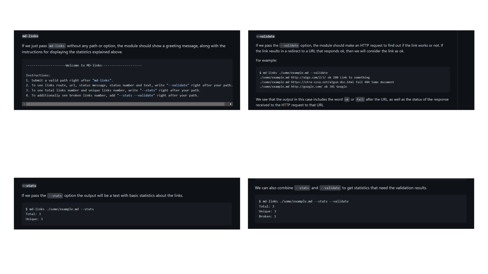
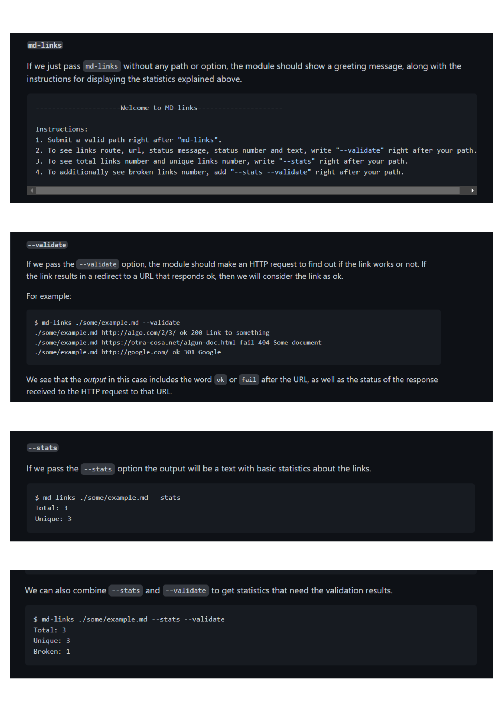

MD Links


Executable library developed with Node.js that allows
users to identify and validate links while reporting statistics of Markdown files.
Technologies and Features:
- Node.js.
- JavaScript.
- Git.
- Github.
- Unit Testing.
- HTTP requests (status of the response received to the links URL).
- Basic statistics (total links and unique links number).
- Sum up of validation results (broken links number).
- Usage instructions (how to install package).